SimpliSpeak — Report Revision Guide
What to add, change and remove in HCI_ASSIGNMENT_3 (1).pdf so the report matches the current implementation
Based on: the uploaded report (5 pages, ACM format, written for the Phase 1 low-fidelity Figma prototype) and the SimpliSpeak code as it is on 11 November 2026 (server.py, simplispeak/, web/; about 3,900 lines of Python and JavaScript).
Figures: all new figures referred to below are ready in the folder SimpliSpeak/report_figures/ (PNG, and SVG for the three diagrams).
Legend: CHANGE rewrite this part · ADD new material · REMOVE delete or move · KEEP still correct.
Green boxes contain text you can paste (edit freely); red boxes quote the current report text that is now wrong.
Contents
- The most important problems (summary)
- Suggested new structure
- Section-by-section changes (with paste-ready text)
- NEW section: Technical Implementation (full draft)
- NEW: Complete command and gesture reference
- NEW: Design iterations from phone trials
- NEW: Technical verification (what was tested, and how)
- Figures to add (with placement and captions)
- Tables to add
- Limitations and known issues to state honestly
- References to add
- Final checklist
1. The most important problems (summary)
- The report says the system does not exist. The abstract, introduction, §3.1, §3.3, §3.5, §4.1, §5 and §8 state that automatic simplification, OCR and real audio playback are not implemented. All three now work. This is the biggest change.
- The gesture mappings in §3.4 are out of date. In the main app, swipes now move between controls (as in TalkBack/VoiceOver), double tap chooses, and holding re-reads the screen. The Phase 1 mapping (swipe = next/back, hold = explain) survives only in the "gesture mode" of the accessibility version (
classic.html). §3.4 must be rewritten.
- Hindi is a whole new feature: simplified text, the app's own speech, and voice commands in Hindi. It is not mentioned at all.
- The safety check is now automated (§3.5 says "it does not yet contain an automated verification mechanism"). Describe the protected-facts guard and the level fallback.
- Three interaction modes (touch mode, buttons, screen-reader mode) and a voice-guided start replace the Phase 1 single flow.
- Privacy (§7.2) is now wrong in an important way: text and photos are sent to Google's Gemini API, and AI answers are saved on the laptop. This must be disclosed.
- Evaluation is still not done with users (no data in
study/data/), so keep that honest — but add a technical verification section (automated tests, plus the team's test of the English interaction on a real phone) and note that study mode is built and ready.
- Small factual fixes: four example texts (not three); levels now exist in English and Hindi; speed range is 0.6×–1.8×; the ACM page header still says "Conference'17, July 2017, Washington, DC, USA".
2. Suggested new structure
| Current section | Action | New section (suggested) |
|---|
| Abstract | CHANGE | Abstract — describe the working Phase 2 system (text in §3). |
| 1 Introduction | CHANGE | 1 Introduction — last two paragraphs rewritten; contributions list added. |
| 2 Conceptual Design | CHANGE | 2 Conceptual Design — add goal 6 (language), §2.4 three ways of using it, new Fig. 2 (interaction flow). |
| 3 System Design and Architecture | CHANGE | 3 System Design — implemented architecture (new Fig. 1 replaces old Fig. 1). |
| — | ADD | 4 Technical Implementation (full draft in §4 of this guide). |
| 4 Prototype Description | CHANGE | 5 High-fidelity Prototype Walkthrough — screenshots (Figs. 4–8) instead of the Figma description. |
| — | ADD | 6 Design Iterations from phone trials (table in §6 of this guide). |
| 5 Compromises in Prototyping | CHANGE | 7 Compromises — remove the three solved ones, add the new ones. |
| 6 User Evaluation and Results | CHANGE | 8 Evaluation — 8.1 Technical verification (NEW), 8.2 Planned user study (updated to the built study mode). |
| 7 Ethics and Risk Assessment | CHANGE | 9 Ethics — privacy rewritten; Table 2 gets a "Status in Phase 2" column. |
| — | ADD | 10 Limitations and Future Work. |
| 8 Conclusion | CHANGE | 11 Conclusion. |
| — | ADD | Appendix A: full command and gesture reference (if the page limit is tight, keep only the compact Table in the main text). |
If your course has a page limit, the main text can carry the compact command table (Table A in §9) and Figs. 1–3 plus one screenshot strip; move the full reference tables and the remaining screenshots to the appendix.
3. Section-by-section changes
Front matter CHANGE
- Title: consider "SimpliSpeak: User-Controlled Text Simplification for Audio-First Accessible Reading — Phase 2 High-Fidelity Prototype".
- Page header placeholder "Conference'17, July 2017, Washington, DC, USA" comes from the ACM template. In
acmart replace it, e.g. \acmConference[CS435 HCI]{Course Project Report}{November 2026}{IIT Gandhinagar}, or hide it with \settopmatter{printacmref=false} and \renewcommand\acmConference[4]{}.
- Keywords: add voice user interfaces, Hindi, large language models, multimodal interaction.
Abstract CHANGE
"The Phase 1 project produced an eleven-screen low-fidelity prototype … The current prototype is not an operational AI application: automatic simplification, optical character recognition and real audio playback have not been implemented …"
PASTE-READY ABSTRACT
Screen readers make digital text audible, but they do not make complex language easier to understand. SimpliSpeak is an audio-first reading application that lets blind and low-vision listeners decide, while listening, how simple a text should be. Phase 1 explored the idea with a low-fidelity Figma prototype; this report describes the Phase 2 high-fidelity implementation, a web application that runs in a phone browser. Text can be pasted, photographed or typed. A large language model (Google Gemini) rewrites each sentence at three levels — Light, Simple and Very simple — in English or Hindi, and a rule-based protected-facts guard checks that numbers, doses, dates, amounts and warnings survive at every level; when a level loses a fact, the listener is warned and hears the next fuller level instead. The text is read one sentence at a time; listeners can change the level without losing their place, ask what a word means, return to the exact original wording, and control everything by voice commands in English or Hindi, screen-reader-style touch gestures, large buttons, or their own screen reader. When the AI is unavailable the system falls back to a rule-based English simplifier. The application includes an instrumented study mode (counterbalanced tasks, comprehension questions, NASA-TLX and SUS). Functional behaviour was verified with automated tests in a phone emulator and, for the English interaction, by the team on a real phone; a study with blind and low-vision participants has not yet been conducted, so no claims about comprehension or usability are made.
1 Introduction CHANGE (last two paragraphs)
"It demonstrates the proposed screens and interaction flow, rather than a fully implemented application. The report therefore distinguishes between: (1) functionality represented in the prototype, (2) … manually demonstrated … (3) … proposed for a later implementation."
PASTE-READY
Phase 1 explored this idea with a low-fidelity prototype. In Phase 2 we implemented it as a working application that runs in a phone browser and speaks to the listener from the first tap. This report distinguishes between (1) functionality that is implemented and tested by the team on a real phone (the complete English interaction), (2) functionality that is implemented and verified only by automated tests in a phone emulator (the Hindi interaction and the headphone "always listening" option), and (3) functionality that remains future work. Our contributions are: (a) a listener-controlled, four-level simplification loop in which changing the level never changes the reading position; (b) a protected-facts guard with a level fallback that keeps simplified text from silently dropping numbers or warnings; (c) three complete ways of operating the application without sight — voice, screen-reader-style touch exploration, and the user's own screen reader; and (d) the same interaction in Hindi, including Hindi voice commands.
2 Conceptual Design CHANGE
- §2.1, §2.2 personas and goals 1–4: KEEP.
- Goal 5 → "Interact without relying on sight: voice commands (English and Hindi), screen-reader-style touch gestures, large buttons, the user's own screen reader, and short sound cues (earcons)."
- Add goal 6: "Use the listener's language: the simplified text, the application's speech and the voice commands are available in Hindi as well as English."
- §2.3 core loop: add the end-of-text check — "After the last sentence the application asks 'Was it clear?'. If the listener says no, it starts again from the first sentence one level simpler." Add Fig. 2 (interaction flow).
PASTE-READY — NEW §2.4 THREE WAYS OF USING SIMPLISPEAK
A web page cannot receive swipes while a phone screen reader is running, and a person who cannot see the screen cannot find a button by looking for it. SimpliSpeak therefore offers three complete ways of using it, chosen on the opening screen. Touch mode (the default after "Tap anywhere to start") turns the whole screen into one gesture surface that copies the screen-reader convention blind users already know: swipe right or left to hear the next or previous control, double tap anywhere to choose it, and hold a finger down to hear the screen again. Button mode ("I can see the screen") is for low-vision users and sighted helpers, who tap large buttons while the application still speaks. Screen-reader mode ("I use TalkBack or VoiceOver") turns off the application's own voice so that the user's screen reader, with its own voice and speed, reads labelled controls and the text. In all three modes the application reads each screen aloud when it opens and accepts voice commands.
3 System Design and Architecture CHANGE
§3.1: "The Phase 1 deliverable is a low-fidelity interface prototype, not a functioning software system. The architecture below describes the proposed structure … should not be interpreted as components already integrated or tested." — and the caption of Figure 1.
- Replace old Fig. 1 with new Fig. 1 (
fig_A_architecture.png) and use the text below.
- §3.2 Input: clipboard, typing and camera scanning are all implemented; PDF/Word, e-mail and share-sheet import are still deferred. Mention the 3,000-word limit per text.
- §3.3 Levels: implemented; default level is Simple; the four levels exist for every sentence, so changing level is instant and keeps the position.
- §3.4 Controls: rewrite completely — see the paste-ready text below and the reference in §5 of this guide.
- §3.5 Safety: rewrite — see the guard description in §4.4 of this guide and add Fig. 3.
PASTE-READY — §3.1 IMPLEMENTED ARCHITECTURE
SimpliSpeak is implemented as a web application (HTML, CSS and JavaScript, without frameworks) that runs in the phone's browser, served by a small Python 3 server on a laptop on the same Wi-Fi network (Fig. 1). The server uses HTTPS with a self-signed certificate because browsers allow the microphone, camera and clipboard only on secure pages; it prints a link and a QR code for the phone. The phone handles input, interaction, reading state and speech; the server splits text into sentences, obtains the three simplified levels and a glossary from Google's Gemini API, checks every level with the protected-facts guard, saves AI answers so that the same text never needs the AI twice, and falls back to a rule-based English simplifier when the AI is unavailable.
PASTE-READY — §3.4 NON-VISUAL CONTROLS (REPLACES THE CURRENT §3.4)
Every action can be performed by voice, by touch or by button (Table A). Voice commands are given after tapping the microphone button, or with a two-finger upward swipe in touch mode; on the home and examples screens the application listens by itself after reading the screen. In touch mode, horizontal swipes move between controls and announce each one ("Paste. Use text you copied. 1 of 7."), a double tap chooses the announced control, and holding a finger down re-reads the screen and the available gestures. While text is being read, a double tap with nothing selected pauses or resumes, swiping up or down makes the text simpler or more detailed, and any touch first pauses the reading, as in commercial screen readers. The Phase 1 mapping, in which swipes moved directly between parts, is kept as "gesture mode" in the accessibility version, together with keyboard shortcuts; we changed the default because informal trials showed that blind users first need a way to discover the controls. Speech speed is adjustable from 0.6× to 1.8×, and thirteen short earcons signal state changes such as a new part, a level change, the microphone opening, or a safety warning [Blattner et al.].
4 Prototype Description → High-fidelity Prototype Walkthrough CHANGE
"Phase 1 produced an eleven-screen low-fidelity prototype in Figma … manually prepared simplified wording for three sample texts … It does not yet provide automatic AI simplification, real audio playback, or complete document processing."
- Keep one sentence about Phase 1 and the Figma link (as history) KEEP.
- Describe the screens with the screenshots (Figs. 4–8): opening screen, home, examples, reading, word help, original wording, Hindi, safety warning, touch-mode focus.
- Four built-in example texts (fictional, written for the study): a library note (practice, 3 parts), a medicine leaflet "Lisinor 10 mg" (8 parts), a bank KYC letter (7 parts), an electricity bill (6 parts). Each has hand-written levels, a glossary and 2–4 comprehension questions.
- §4.3 Illustrative example: keep the medicine warning, but now show the generated levels and say that the guard checks them (an English hand-written example and a Hindi generated one appear in Figs. 5 and 8).
- §4.4 Access: add how to run it (
python server.py --mobile, open the printed https link on the phone on the same Wi-Fi), the code repository link and the demo video link.
5 Compromises CHANGE
- REMOVE or reword as "resolved in Phase 2": manual simplification, simulated speech, represented scanning.
- KEEP: limited document integration (still no PDF/Word/share sheet), illustrative personas.
- CHANGE "unvalidated interaction mappings" → still unvalidated with users, but now implemented and changed through informal trials (§6 of this guide).
- ADD the new compromises listed in §10 of this guide (cloud AI and free-tier limits, local network with a self-signed certificate, device-dependent voices, emulator testing, etc.).
6 Evaluation CHANGE
- §6.1 status: still true that no user study has been run — KEEP the honesty. Add: "Phase 2 adds technical verification (§8.1) and a built-in study mode that runs the planned protocol."
- Add §8.1 Technical verification — text and Table C in §7 of this guide.
- Update §6.3 procedure to what study mode actually does:
PASTE-READY — PROCEDURE AS IMPLEMENTED IN STUDY MODE
The study mode (accessibility version) runs a counterbalanced within-subjects session. Condition A reads the text exactly as written, with only next, back and repeat, like a screen reader; condition B is the full SimpliSpeak. After a practice task with the library note, each participant hears the medicine leaflet and the bank letter, one in each condition, brought in by clipboard paste; the order of texts and conditions is counterbalanced over four groups (participant number mod 4). A final task uses the electricity bill in condition B, brought in by scanning a printed copy, to compare input routes. After each task the application asks the comprehension questions as spoken lists, followed by NASA-TLX; at the end it asks the ten SUS items, ratings of trust ("the simplified text kept the important facts") and control, and preferences for input route, level and version. The facilitator then asks six interview questions. Every action (gesture, voice command, level change, word request, time) is logged to a JSON file per participant, and analysis/analyze.py produces tables and charts.
7 Ethics and Risk Assessment CHANGE
§7.2: "The prototype does not currently process or store real user documents …"
PASTE-READY — §7.2 PRIVACY AND DATA PROTECTION
The implementation sends the text a user brings in — and, for scanning, the photograph — to Google's Gemini API to obtain the simplified levels, word explanations and the text of a photo. AI answers are saved on the laptop that runs the server (.cache/ai_answers.json) so that the same text is never sent twice; this file can contain simplified personal text and must be deleted after demonstrations and studies. The API key is stored only on the laptop. The phone stores only preferences (speech speed and language) in the browser. There are no user accounts and nothing is shared between users. All texts used in the study are fictional. Before use with real documents, participants must be told that text leaves the device, and a local or on-device model, a retention limit and a "clear my data" control should be added.
- §7.1: add one sentence: the guard and level fallback are now implemented (§4.4), but they only detect lost numbers and warnings, not changed names or added advice (see §10).
- §7.3: add what is implemented: ARIA live regions, dialogs with
role="dialog" and focus moved to the Close button, radio groups for levels and language, lang="hi" on Hindi text so screen readers switch voice, buttons at least 52 px high, light high-contrast theme.
- Table 2: add a column "Status in Phase 2" — see Table D in §9.
8 Conclusion CHANGE
PASTE-READY
SimpliSpeak now works end to end: a listener can bring in a letter by paste, photo or typing, hear it one sentence at a time in English or Hindi, make it simpler or more detailed without losing their place, ask what a word means, hear the exact original, and do all of this by voice, touch or screen reader. A protected-facts guard keeps simplified versions from silently dropping numbers or warnings. What remains open is evidence: the planned study with blind and low-vision participants must show whether listener-controlled simplification improves comprehension and trust without adding workload. SimpliSpeak's success should ultimately be judged not only by whether it can simplify text, but by whether it helps listeners understand information while retaining control and confidence in what they hear.
4. NEW section: Technical Implementation (full draft)
Each subsection below can be pasted with light editing. Keep the order; shorten 4.6–4.11 if space is short.
4.1 Platform
PASTE-READY
The client is a single-page web application written in plain HTML, CSS and JavaScript modules (no frameworks), so it runs in Chrome on Android and Safari on iOS without installation and can be added to the home screen. The server is a Python 3 program built on the standard library's threaded HTTP server. In mobile mode it creates a self-signed certificate (with the cryptography package), listens on the local network, and prints the phone link and a QR code. Each connection performs its TLS handshake in its own thread: an earlier version wrapped the listening socket, so a single phone that opened a connection and abandoned it (as browsers do around a certificate warning) froze the whole server. The server also refuses to start if its port is already taken (Windows otherwise lets a second copy share the port), which prevents an old copy from silently serving outdated code.
4.2 Text preparation
PASTE-READY
The server splits text first into paragraphs (blank lines or bullet points) and then into sentences at ".", "!", "?" or the Hindi danda "।" followed by a capital letter, digit or Devanagari letter. Titles such as "Dr.", "Mr.", "Rs." and "No." never end a sentence, while units such as "mg." and "etc." may. Each original sentence becomes one part, the unit of navigation; texts are limited to 3,000 words. The original sentence is kept unchanged alongside every simplified version.
4.3 AI simplification and word help
PASTE-READY
One request per document asks the model for three versions of every numbered sentence and a glossary of hard terms, returned as JSON that must follow a fixed schema (index, light, simple, very_simple; term, explanation). The instructions define the levels (Light: plain words, same structure; Simple: sentences of about twelve words or fewer, active voice; Very simple: about eight words, one idea per sentence) and five hard rules: keep every number, dose, date, amount and name exactly, in digits; never drop or soften a warning or deadline; never add advice; write for the ear; use a respectful adult tone. For Hindi, an addition asks for everyday spoken Hindi in Devanagari, digits 0–9, unchanged names and amounts, and Hindi negations for warnings, while the glossary keeps the English term. Temperature is 0.2 and the model's "thinking" is set to minimal, which reduced the time for a three-sentence text from 13.7 s to 4.8 s in our measurements. Words not in the glossary are explained on request in at most twenty words, in the listener's language.
4.4 Protected-facts guard and level fallback
PASTE-READY
For every sentence and level, the guard extracts the numeric facts of the original — digits with separators removed, English number words (one to twelve, once, twice, half) and, in simplified text, Hindi number words (एक … बारह, आधा) and Devanagari digits — and requires every digit-based fact to appear in the simplified version. If the original contains a prohibition (not, never, no, cannot, stop, discontinue), the simplified version must contain a negation, in English or in Hindi (नहीं, मत, न, बंद, रोक, बिना …). A level that fails is marked unsure with the facts it lost. On the phone, a sentence whose chosen level is unsure is read from the next fuller level that kept every fact (Very simple → Simple → Light), and only from the English original if none did; a soft double beep and a short spoken warning ("Careful: the simplest version left out a detail, so here is a fuller one") precede it, and the screen shows what was lost (Fig. 3, Fig. 8). For example, in the Hindi electricity bill the Very simple version of the first sentence dropped the billing period "1 to 30 September"; the listener heard the Simple Hindi sentence, which kept it. The guard checks omissions only; it cannot detect a changed name or added advice.
4.5 Reliability: model chain, cache and offline fallback
PASTE-READY
Free-tier API keys allow about twenty requests per model per day, and newer models are often busy. The server therefore tries a configurable chain of Gemini models in order (Fig. 1). A model that reports its daily limit is skipped until the limit resets; a busy model gets one quick retry and is then skipped for two minutes; and the whole chain gives up after about ninety seconds. Every successful answer is saved under a hash of the task, language and text, so repeating a text, an example or a word costs no request even after a restart. When no model answers, a rule-based English simplifier and word list take over, and the listener is told why ("The main AI's daily limit is used up, and the backup AI is busy right now"). The same message appears in the home screen's status line.
4.6 Photo of paper (OCR)
PASTE-READY
"Photo of paper" opens the phone's own camera application. The photo is reduced to at most 1,800 pixels, sent as JPEG to the multimodal model with the instruction to transcribe the text exactly in reading order, and the result is simplified like pasted text. If the AI is unavailable, Tesseract.js reads the photo in the browser instead. If fewer than four words are found, the application asks the user to try again with more light and the whole page in view. The accessibility version additionally offers a live camera view with spoken guidance ("Too dark", "Hold still") and automatic capture when the page is steady.
4.7 Speech output
PASTE-READY
Speech uses the browser's Web Speech synthesis. Phones allow speech only after a user gesture, so the first tap speaks a silent utterance and starts a silent looping sound that makes the phone treat the page as a media player, which routes audio to the loudspeaker and, on iPhone, ignores the silent switch. Hindi text is spoken with an installed Hindi voice (hi-IN) and English with the phone's default voice. If speech does not start within six seconds, a "No sound? Tap here" button appears. Thirteen earcons generated with Web Audio mark events such as a new part, simpler or more detail, the microphone opening, a safety warning and the end of the text.
4.8 Speech input and voice commands
PASTE-READY
Voice commands use the browser's Web Speech recognition in Indian English (en-IN) or Hindi (hi-IN), following the chosen language. Recognised phrases are matched to commands by word patterns with synonyms (e.g. "details", "harder" and "longer" all mean more detail) — about 30 English and 28 Hindi or Hinglish phrases (Table A, Appendix A). The application listens (1) by itself after reading the home and examples screens, (2) after the microphone button or a two-finger upward swipe, which first pauses the reading, and (3) at the end of a text for "yes" or "no". Listening while the phone speaks through its loudspeaker picks up the application's own voice, so continuous "always listening" is offered as an option for headphone users; it ignores phrases of more than five words and phrases whose words all occur in the sentence currently being spoken. An optional mode that pauses after every sentence and listens for 3.5 s was tried and rejected by the team as fragmenting the reading (§6).
4.9 Touch layer and screen-reader support
PASTE-READY
In touch mode a transparent layer covers the screen and recognises taps, double taps (within 450 ms), holds (800 ms), swipes (at least 45 px) and two-finger gestures; the values were relaxed after trials because blind users tap more slowly. Each screen defines its controls in reading order; swiping highlights the current control with a thick yellow ring for low-vision users and announces its name, description and position. In screen-reader mode the layer is off: controls carry accessible names, levels and languages are radio groups, the word explanation and help are modal dialogs that receive focus, announcements use ARIA live regions, and Hindi sentences carry lang="hi" so that TalkBack switches to its Hindi voice.
4.10 Hindi
PASTE-READY
Choosing हिंदी — by tapping, swiping to it, or saying "Hindi" — switches three things at once: the simplified levels are produced in everyday Hindi (the Original level stays in English), the application speaks its own prompts in Hindi, and the microphone listens in Hindi. Hindi commands include रुको (pause), आगे / पीछे (next / back), फिर से (repeat), और आसान (simpler), विस्तार से (more detail), मूल (original), "पोटैशियम का मतलब क्या है" (meaning of a word), and फोटो / उदाहरण on the home screen; common Hinglish forms such as "aage" and "ruko" are also understood. The rupee sign is read as "रुपये" in Hindi.
4.11 Visual design
PASTE-READY
The visual design serves low-vision users and sighted helpers: a light, high-contrast theme (kept even when the phone is in dark mode), body text of 18 px, buttons at least 52 px high and three home-screen actions of at least 112 px, the whole text visible with the sentence being read highlighted, hard words underlined, and an optional display of the original wording under each sentence.
4.12 Code organisation (optional table for an appendix)
| File | Responsibility |
|---|
server.py | HTTPS server, API endpoints (/api/simplify, /api/explain, /api/ocr, /api/samples, /api/status, /api/study/*), answer cache, mobile mode with QR code |
simplispeak/segment.py | Sentence splitting |
simplispeak/prompts.py | Instructions for the model (English rules + Hindi addition) |
simplispeak/gemini.py / ai.py | Gemini client (model chain, limits, OCR) / alternative Claude client |
simplispeak/guard.py | Protected-facts guard (English + Hindi) |
simplispeak/rules.py | Offline rule-based simplifier and word list |
simplispeak/samples.json | Four example texts with hand-written levels, glossaries and questions |
web/index.html, js/simple.js | Main application (voice-guided, three modes, Hindi) |
web/js/audio.js, gestures.js | Speech output and input, command vocabulary, earcons; gesture recogniser |
web/classic.html, js/app.js, js/study.js | Accessibility version (gesture mode, keyboard, live camera guidance, settings) and study mode |
analysis/analyze.py | Turns study logs into tables and charts |
5. NEW: Complete command and gesture reference (Appendix A)
All commands below are implemented in the current code. "Say" columns list all accepted wordings; the first one is the recommended wording to show users.
5.1 How to give a voice command
| Where | How |
|---|
| Home and examples screens | The app listens by itself after reading the screen (up to three tries); or tap 🎤 Speak a command. |
| While reading — button mode | Tap 🎤 (bottom right). Reading pauses while listening. |
| While reading — touch mode | Two-finger swipe up, then speak. |
| With headphones | Switch on 🎧 Always listening (or say "always listen" / "headphones"): speak at any moment. |
| End of the text | The app asks "Was it clear?" and listens for yes or no. |
5.2 Voice — home screen
| Action | English (say) | Hindi (say) |
|---|
| Paste | paste, clipboard, copied, copy | पेस्ट, चिपकाओ, कॉपी |
| Photo of paper | photo, picture, scan, camera, paper, letter, snap | फोटो, तस्वीर, कैमरा, कागज़, स्कैन |
| Examples | example, sample, demo, hear | उदाहरण, नमूना, सैंपल |
| Typing box | type, keyboard, write | टाइप, लिखना |
| Language | Hindi / English | हिंदी / इंग्लिश, अंग्रेज़ी |
| Help | help, how, instructions | मदद, सहायता, हेल्प |
| Hear the screen again | read screen, read again, again, repeat | दोबारा, फिर से, स्क्रीन |
| Turn touch mode off | show buttons, use buttons, I can see | — |
5.3 Voice — examples screen
| Action | English (say) | Hindi (say) |
|---|
| Choose an example | one … four, first … fourth, or a word from its name ("library", "medicine", "bank", "electricity") | एक … चार, पहला … चौथा, लाइब्रेरी, दवा, बैंक, बिजली / बिल |
| Back | back, go back, home | वापस, पीछे, होम |
5.4 Voice — while reading
| Action | English (say any) | Hindi (say any) | Hinglish |
|---|
| Pause | pause, stop, wait, hold on, quiet, silence, enough | रुको, रोको, रुक जाओ, बंद करो, ठहरो | ruko, roko |
| Play | play, resume, continue, start, read, go on, carry on | चलाओ, पढ़ो, शुरू करो, जारी रखो | chalao, padho, shuru |
| Next part | next, forward, skip, move on | आगे, अगला, अगली | aage, agla |
| Previous part | back, previous, go back | पीछे, पिछला, वापस | peeche, wapas |
| Repeat | repeat, again, say that again, pardon | फिर से, दोबारा, दोहराओ | phir se, dobara |
| Simpler (one level) | simpler, easier, easy, shorter, simplify, too hard | और आसान, आसान, सरल | aasaan, saral |
| More detail (one level) | more detail, details, detailed, harder, longer, normal, complicated | विस्तार से, ज़्यादा जानकारी | vistaar |
| Exact original | original, exact, as written, source | मूल, असली, जैसा लिखा | — |
| Meaning of a word | what does potassium mean; explain word; define word; "explain" alone = first hard word of the sentence | पोटैशियम का मतलब क्या है; … का अर्थ; समझाओ | matlab |
| Faster / slower | faster, speed up / slower, slow down | तेज़, जल्दी / धीरे, धीमा | tez / dheere |
| Where am I | where am I, which part, how far | मैं कहाँ हूँ, कौन सा हिस्सा | — |
| List the commands | what can I say, commands, options | क्या बोल सकता हूँ, कमांड | — |
| Help · Home | help · home, menu | मदद · होम | madad |
| Hear the screen | read screen | — | — |
| Close word meaning | close, done, keep reading (also "stop" while it is open) | बंद करो (while it is open) | — |
| Listening options | always listen / headphones · stop listening · listen after each sentence | — | — |
"धीरे" changes the speaking speed; "सरल / और आसान" changes the words. Each level change is announced (e.g. "Very simple." / "बहुत आसान।") and the same sentence is read again.
5.5 Voice — end of the text ("Was it clear?")
| Answer | English | Hindi |
|---|
| Yes | yes, yeah, clear, good, fine, okay | हाँ, जी, ठीक है, समझ आया |
| No → start again one level simpler | no, not, simpler, easier, again | नहीं, ना, और आसान, फिर से |
| New text | home, new, another | — |
5.6 Touch gestures — touch mode (default for people who cannot see)
| Gesture | While reading | On other screens |
|---|
| Swipe right / left | Hear the next / previous control ("Next sentence. 3 of 13.") | Same |
| Double tap, after swiping to a control | Choose that control | Choose that control |
| Double tap, nothing selected | Pause or play | Short hint |
| Double tap, explanation or help open | Close it (and continue reading) | Close it |
| Single tap | Hear the current control again | Same |
| Hold (≈1 s) | Hear the screen and gestures again | Same |
| Swipe up / down | Simpler / more detail | Previous / next control |
| Two-finger tap | Pause or play | Hear the screen again |
| Two-finger swipe up | Voice command | Voice command |
| Two-finger swipe down | Back home; or close an explanation / help | Back; or close |
Any touch while reading first pauses the reading. Swipe ≥ 45 px, double tap within 450 ms, hold 800 ms.
5.7 Buttons — button mode and screen-reader mode
| Control | Does |
|---|
| Paste · Photo of paper · Hear an example | Bring text in (home screen) |
| English / हिंदी | Language of the simple version, the app's speech and the microphone |
| Original · Light · Simple · Very simple | Change level; stays on the same sentence |
| ⏮ ▶/⏸ ⏭ | Previous · play/pause · next |
| 🐢 🐇 | Slower / faster (0.6×–1.8×, steps of 0.1) |
| 🎤 | Speak a command |
| Tap a sentence · tap an underlined word | Read from that sentence · open its meaning |
| Show original wording (switch) | Show the original under each sentence |
| 🎧 Always listening (switch) | Microphone stays open (headphones) |
| 🔊 Read screen · Help · Test sound | Hear the screen · instructions · check the loudspeaker |
| Yes, clear / No, make it simpler | End-of-text answer |
5.8 Accessibility version (classic.html): gesture mode and keyboard
| Gesture | Keyboard | Action while reading |
|---|
| Double tap | Space | Play / pause |
| Swipe right / left | → / ← | Next / previous part |
| Swipe up / down | ↑ / ↓ | Simpler / more detail |
| Tap | R | Repeat |
| Hold | E | Explain a hard word |
| Two-finger tap | O | Original wording |
| Two-finger swipe up | V | Voice command |
| Two-finger swipe down | Esc | Menu (keeps the place) |
| — | W · H · + / − | Where am I · help · faster / slower |
5.9 Earcons (sound cues)
| Sound | Meaning |
|---|
| Soft tick | A new part begins; moving between controls; "working…" while simplifying |
| Two rising notes / two falling notes | Simpler / more detail |
| Low buzz | Limit reached (already simplest, first part) |
| Short beep | Microphone is now listening |
| Soft double beep | Safety warning: a simpler version lost a fact |
| Three rising notes | End of the text |
| Rising pair / low sawtooth | Success / error |
6. NEW: Design iterations from phone trials
This is strong HCI material: each problem found while trying the app on a phone led to a concrete design change. Present it as a table (Table B) in a short section "Design Iterations". Be clear these were trials by the team on a real phone (English), not a user study.
| # | Problem observed | Design change |
|---|
| 1 | Nothing was spoken when the app opened on a phone. | Speech starts inside the first tap; silent audio loop routes sound to the loudspeaker; "No sound? Tap here" fallback; "Test sound" button. |
| 2 | In the first "audio mode", an invisible gesture layer blocked the visible buttons, confusing sighted testers. | Three explicit modes on the opening screen (touch, buttons, screen reader). |
| 3 | Users did not understand what the app does or what to press. | Voice-guided home that reads the whole screen and lists the options; three large buttons; steps explained; help sheet. |
| 4 | A blind user cannot find a button when nothing is being read. | Swipe to explore with spoken name and position, double tap to activate (screen-reader convention); yellow focus ring for low vision. |
| 5 | Double tap with nothing selected produced confusing instructions. | While reading, double tap with nothing selected pauses / plays. |
| 6 | Saying "pause" or "detail" while it was reading did nothing. | Wider vocabulary ("details", "harder"…); push-to-talk that pauses the reading; a listen-after-every-sentence mode was tried and rejected as fragmenting the text; "always listening" for headphones. |
| 7 | Not clear how a screen-reader user finds the Close button of a word explanation. | Explanation is a dialog, focus moves to "Close and keep reading", the app says how to close, double tap closes, reading resumes. |
| 8 | Hindi output was useful, but commands could only be given in English. | Hindi speech recognition, Hindi command vocabulary, and the app's own prompts in Hindi. |
| 9 | Simplified Hindi sometimes dropped dates or numbers; the fallback switched to English. | Fallback to the next fuller Hindi level that kept every fact, with a Hindi warning. |
| 10 | The dark theme was disliked. | Light, high-contrast theme, kept even in phone dark mode. |
| 11 | The phone sometimes could not reach the laptop, or showed old behaviour. | Per-connection TLS (server no longer freezes); refuse to start a second copy on the same port; QR link. |
| 12 | The AI's free daily limit ran out during testing. | Model chain, skipping exhausted / busy models, saved answers, plain-language notice and status line. |
7. NEW: Technical verification (§8.1 in the report)
PASTE-READY
We verified the implemented behaviour with automated end-to-end tests. A script drives Chrome through the DevTools Protocol in phone emulation (412 × 915 px, Android user agent, real touch events). The browser's speech synthesis and recognition are replaced by scripted stand-ins that record everything the application says and feed it spoken answers, so a check passes only if the application says the expected thing — the test "listens" as a blind user would rather than inspecting the screen. Table C summarises the results. The failures in the blind walkthrough were traced, from the application's speech log, to wrong expectations in the test script. In addition, the team tested the complete English interaction on a real phone ([phone model], [browser]): speech through the loudspeaker, the voice-guided start, touch mode and button mode, voice commands while reading, paste, photo of paper, word meanings and the end-of-text question. The Hindi interaction has so far been verified only in the emulator. None of these tests involved blind or low-vision users.
| Test (Table C) | Result | Notes |
|---|
| Blind walkthrough in touch mode (judged only from speech): open, explore, choose example, control reading, voice word help, hold, help, home, full text to the end, "no" → simpler | 30 / 33 | 3 failures were test-script expectations (verified in logs); run on an earlier build, before reading became one continuous flow |
| English command vocabulary (phrase → command) | 30 / 30 | e.g. "details", "the original", "slow down" |
| Hindi and Hinglish command vocabulary | 28 / 28 | incl. word extracted from "पोटैशियम का मतलब क्या है" |
| Reading flow: one flow per part, 🎤 → pause, 🎤 → more detail, light theme in dark mode | 6 / 6 | |
| Word explanation: spoken close hint, focus on Close, dialog role, resumes reading | 7 / 7 | |
| Hindi simplification and reading (examples, own text, Hindi voice, digits kept, no false warnings, English unaffected) | 18 / 18 | used the live AI |
| Hindi voice flow: switch by voice, "फोटो", "उदाहरण", "दूसरा", रुको, और आसान, विस्तार से, मूल, word meaning, मैं कहाँ हूँ, back to English | 20 / 20 | |
| Safety fallback in Hindi (bill, Very simple): warning, fuller Hindi version, dates kept, Hindi voice, on-screen warning | 6 / 6 | |
| English interaction on a real phone (team test): speech, start, touch and button modes, voice commands, paste, photo, word help, end question | works as intended | fill in phone model and browser |
| Hindi interaction on a real phone | pending | planned once the main Gemini model's daily quota resets; needs a Hindi voice on the phone |
| Server robustness: 5 abandoned connections + 6 parallel requests | passes | previously one abandoned connection froze the server |
| Response time (single measurements, Table C2) | Time |
|---|
| Simplify a 3-sentence, 55-word text (default "thinking" → minimal thinking) | 13.7 s → 4.8 s |
| Hindi simplification through the backup model | 5–8 s (one try took 94 s and fell back to English when models were busy) |
| Word explanation | ≈ 3 s |
| Reading a printed test page from a photo | ≈ 1.8 s (one try 9 s while the model was busy) |
| Saved example or repeated text | < 1 s (no AI request) |
Report these as indicative single measurements on a home Wi-Fi connection with a free-tier key, not as benchmarks.
8. Figures to add
All files are in SimpliSpeak/report_figures/. For a two-column ACM paper, use figure* (full width) for Figs. 1–3 and for screenshot strips; single screenshots fit in one column at about 35% width.
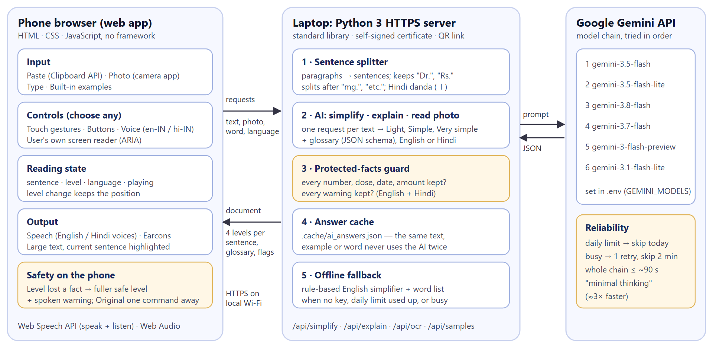
Fig. 1 (replaces the current Fig. 1) — fig_A_architecture.png/.svg — §3.1. Caption: "Implemented architecture of SimpliSpeak. The phone runs the web application (input, controls, reading state, speech); a Python server on a laptop on the same network splits text, obtains three simplified levels and a glossary from a chain of Gemini models, checks every level with the protected-facts guard, saves answers, and falls back to rule-based simplification."
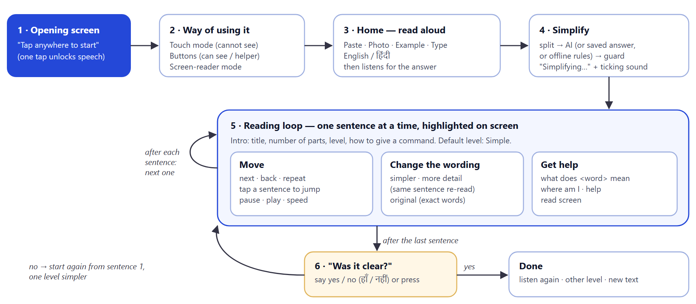
Fig. 2 (new) — fig_B_interaction_flow.png/.svg — §2.3. Caption: "Interaction flow. After one tap the application speaks; the listener chooses a way of using it, brings text in, and listens one sentence at a time, changing the wording or asking for help at any point. At the end, a 'no' to 'Was it clear?' restarts the text one level simpler."
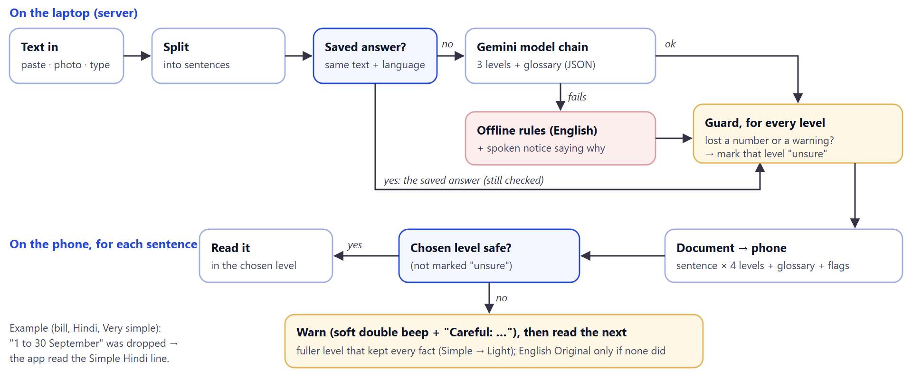
Fig. 3 (new) — fig_C_safety_pipeline.png/.svg — §3.5 / §4.4. Caption: "Simplification and safety pipeline. Every route — saved answer, AI or offline rules — passes the protected-facts guard; on the phone, a level that lost a fact is replaced by the next fuller level that kept it, preceded by a spoken warning."
Fig. 4 — Opening, home and examples (§5 walkthrough)
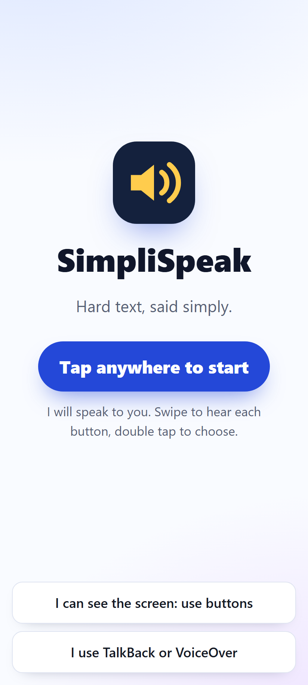
fig_01_welcome
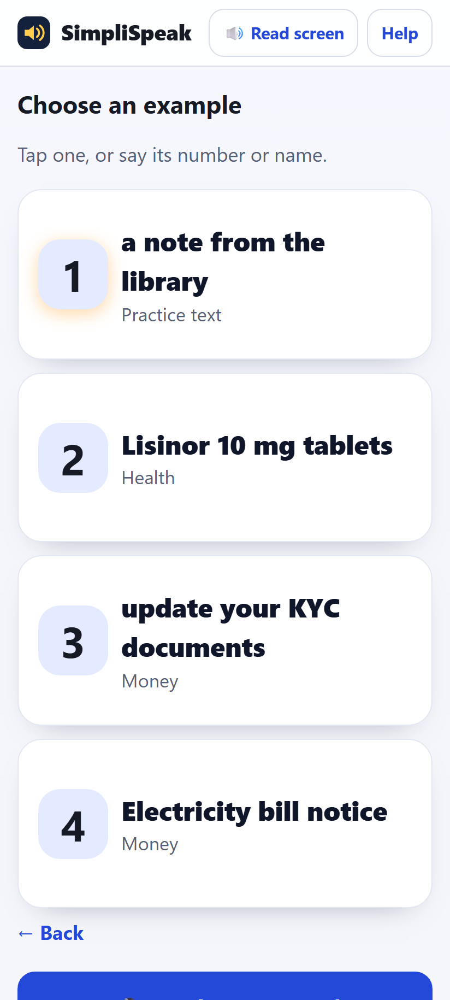
fig_03_examples
Caption: "(a) Opening screen: one tap anywhere starts the voice-guided touch mode; two buttons choose button or screen-reader mode. (b) Home: language choice and three large actions, read aloud. (c) Examples, chosen by tap, number or name."
Fig. 5 — Reading and changing the level
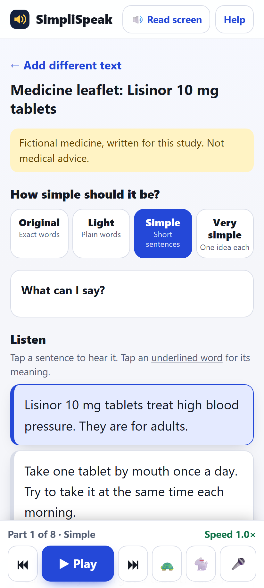
fig_04_reading_en
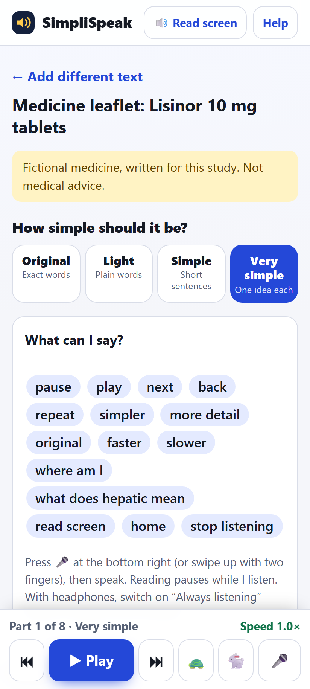
fig_05_reading_verysimple_cmds
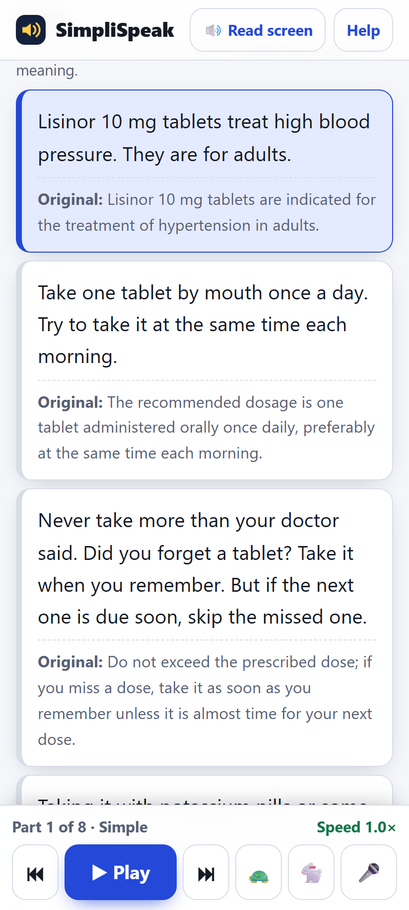
fig_07_show_original
Caption: "(a) Reading at Simple: the current sentence is highlighted and the player is always at the bottom. (b) The same sentence at Very simple, with the 'What can I say?' card open. (c) The original wording shown under each simplified sentence."
Fig. 6 — Word help and help
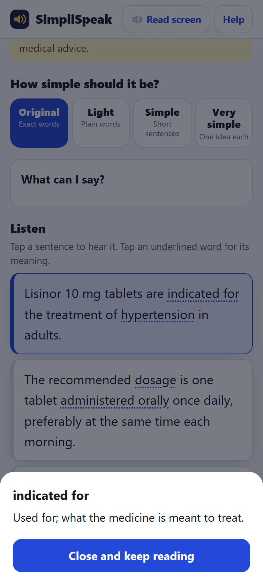
fig_06_word_dialog
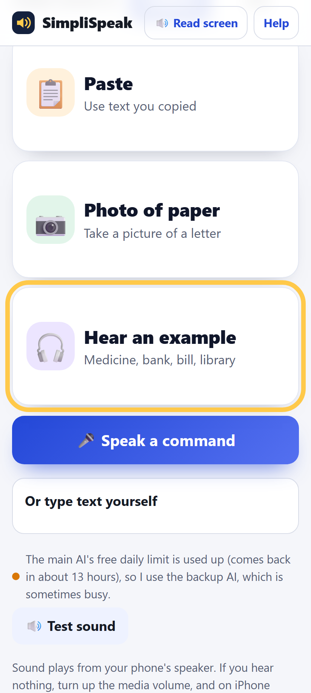
fig_12_touch_focus
Caption: "(a) Word meaning in a dialog; focus moves to 'Close and keep reading'. (b) Help, also read aloud. (c) Touch mode: after three swipes right the app has announced 'Hear an example … 3 of 7' and ringed it; a double tap chooses it."
Fig. 7 — Hindi
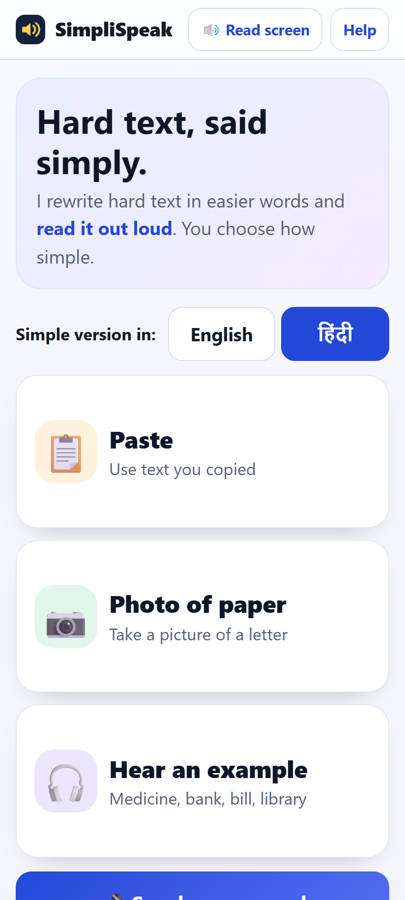
fig_09_home_hindi
fig_10_reading_hindi
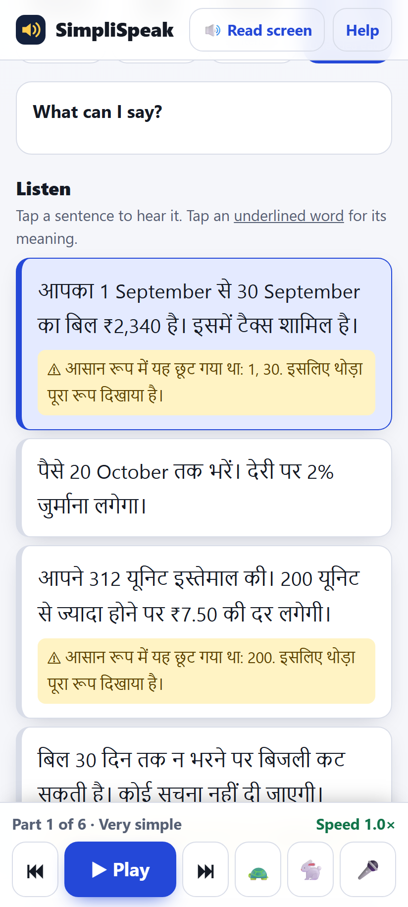
fig_11_safety_fallback_hindi
Caption: "(a) Hindi chosen on the home screen. (b) The medicine leaflet simplified into Hindi (Simple). (c) Safety fallback (Fig. 8 if you separate it): at Very simple, two bill sentences lost dates or numbers, so the app shows and reads the fuller Hindi version and says what was lost."
Fig. 12 (touch focus) shows the status line "The main AI's free daily limit is used up …" at the bottom, because it was captured while the quota was exhausted. Crop it out, or re-take the screenshot when the AI is available.
9. Tables to add
Table A (main text, compact) — "Main commands by modality"
| Action | Voice (English) | Voice (Hindi) | Touch mode | Button |
|---|
| Pause / play | pause / play | रुको / चलाओ | double tap (nothing selected) or two-finger tap | ▶/⏸ |
| Next / back | next / back | आगे / पीछे | swipe to ⏭ / ⏮, double tap | ⏭ / ⏮ |
| Repeat | repeat | फिर से | — | tap the sentence |
| Simpler / more detail | simpler / more detail | और आसान / विस्तार से | swipe up / down | level buttons |
| Original | original | मूल | swipe to "Original", double tap | Original |
| Word meaning | what does X mean | X का मतलब क्या है | two-finger swipe up, then speak | tap underlined word |
| Hear the screen | read screen | — | hold | 🔊 Read screen |
| Speed | faster / slower | तेज़ / धीरे | swipe to 🐇 / 🐢, double tap | 🐇 / 🐢 |
Table B — Design iterations
See §6 of this guide (12 rows; shorten to the 6–8 most important if space is short).
Table C — Technical verification and response times
See §7 of this guide.
Table D — Updated risk table (replace the current Table 2)
| Risk | Mitigation | Status in Phase 2 |
|---|
| Meaning changed or critical fact omitted | Source kept; protected facts; compare output with source; original fallback; flag uncertainty | Implemented: guard for numbers and warnings (English + Hindi), fuller-level fallback, spoken + visual warning, Original one command away. Not covered: changed names, added advice. |
| Incorrect OCR | Let users review; indicate failures | Partly: too-few-words check with spoken retry advice; extracted text visible; no confidence per word. |
| Sensitive document exposure | Minimise data; disclose processing; secure transfer; deletion | Partly: HTTPS, no accounts, fictional study texts. Open: text goes to Google; answer cache on laptop needs manual deletion. |
| Inaccessible controls | Labels, keyboard, non-visual feedback, testing | Implemented: three modes, ARIA, earcons, focus management, keyboard in accessibility version. Open: testing with users. |
| Cognitive overload from prompts | Assistance on demand; concise prompts; speed control | Implemented: help on demand, continuous reading (no per-sentence prompts), speed 0.6–1.8×. Screen intro texts are long and could be shortened after testing. |
| Over-reliance on simplified output | Keep original; state limits | Implemented: original under each sentence, "original" command; examples marked fictional / not advice. |
| New: AI unavailable | Fallbacks | Implemented: model chain, saved answers, offline rules, plain message. |
10. Limitations and known issues to state honestly (§10 in the report)
- No user study yet. All claims about comprehension, workload, usability and trust remain hypotheses.
- Testing. The English interaction was tested by the team on a real phone; the Hindi interaction and the "always listening" option only in a phone emulator with scripted speech. No tests with blind or low-vision users.
- Cloud AI and free-tier limits. About 20 requests per model per day on the free plan; models are often busy; quality of backup models is lower, especially in Hindi (one backup output turned "may raise potassium" into a prohibition — the guard does not catch added content).
- The guard is rule-based. It catches dropped digits, number words and negations; it does not check names, changed meaning or added advice.
- Speech depends on the device. A Hindi voice must be installed; recognition needs internet; speaking while the app speaks works reliably only with headphones.
- Local network deployment. Phone and laptop must share a Wi-Fi network; the self-signed certificate shows a warning; campus networks may block device-to-device traffic. Not a store app.
- Hindi mode speaks and listens in Hindi but on-screen button labels remain in English; the Original level stays in English.
- Input: no PDF/Word/e-mail/share-sheet import; 3,000 words per text.
- Study mode lives in the accessibility version and has not been re-tested after the latest changes to the speech module.
PASTE-READY — FUTURE WORK
Next steps are: (1) the planned within-subjects study with blind and low-vision participants; (2) a meaning-preservation check that also detects added or changed content, for example with an entailment model; (3) on-device or self-hosted models to keep documents private and remove the daily limit; (4) PDF and share-sheet import; (5) Hindi on-screen labels and further Indian languages; (6) a native application to remove the local-network setup.
11. References to add
Check each entry against the source before submitting.
- W3C Web Platform Incubator Community Group. Web Speech API (Community Group Report). — for speech synthesis and recognition.
- W3C. 2023. Accessible Rich Internet Applications (WAI-ARIA) 1.2. W3C Recommendation. — for live regions, dialogs, radio groups.
- Google. Gemini API documentation (structured output, multimodal input, rate limits), accessed November 2026.
- Ray Smith. 2007. An Overview of the Tesseract OCR Engine. In Proc. ICDAR 2007. — for the Tesseract fallback.
- Google. Android Accessibility Help: TalkBack gestures; Apple. VoiceOver gestures. — for the explore-by-swipe convention adopted in touch mode.
- KEEP all nine current references; Blattner et al. (earcons) and Asakawa et al. (listening speed) are now cited by implemented features.
12. Final checklist
- Remove every statement that simplification, OCR or audio are "not implemented" (abstract, §1, §3.1, §3.3, §3.5, §4.1, §5, §8, Fig. 1 caption).
- Rewrite §3.4 controls; add Table A; put the full reference in Appendix A.
- Add the Technical Implementation section (§4 of this guide).
- Replace Fig. 1; add Figs. 2–3 and at least one screenshot strip (Hindi strip recommended).
- Add Hindi everywhere it applies: goals, controls, implementation, figures, limitations.
- Change "three sample texts" to four; speed 0.6×–1.8×.
- Rewrite §7.2 privacy (text goes to Google; answers saved on the laptop).
- Add Design Iterations (Table B) and Technical Verification (Table C); keep "no user study yet" clearly stated.
- Update Table 2 with a status column (Table D).
- Add Limitations and Future Work; update the Conclusion.
- Fix the ACM header placeholder; add code-repository and demo-video links.
- Make every claim match the code: if you change the app again before submission, re-check §5 of this guide.